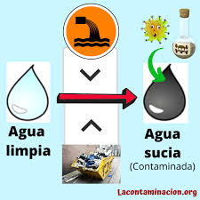
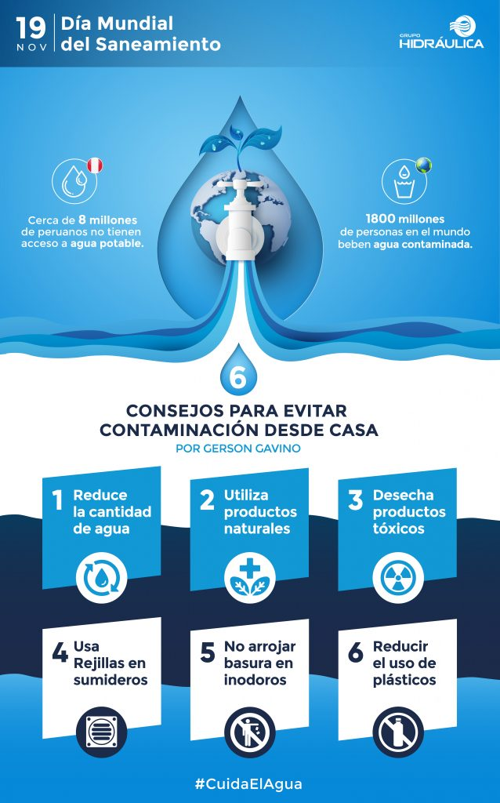

| Inicio | Causas | Consecuencias | Soluciones |
No tirar basura en ríos, lagos o mares 🚯 La acción más básica pero poderosa: mantener los espacios limpios y usar los botes de basura. Reducir el uso de plásticos de un solo uso ♻️ Cambiar botellas, bolsas y utensilios de plástico por materiales reutilizables o biodegradables ayuda a evitar que terminen en el agua. Usar productos de limpieza ecológicos 🧼 Optar por detergentes y jabones amigables con el ambiente reduce el impacto químico en el agua. Tratar las aguas residuales adecuadamente 🚰 Implementar sistemas de tratamiento antes de que el agua usada sea devuelta a ríos o mares es fundamental para evitar contaminaciones masivas. Educar y crear conciencia Promover la educación ambiental desde las escuelas y en la comunidad para que todos comprendan la importancia del agua limpia. Participar en campañas de limpieza Unirse a grupos que organizan limpiezas en playas, ríos o lagunas contribuye directamente a mejorar el estado del agua.
 